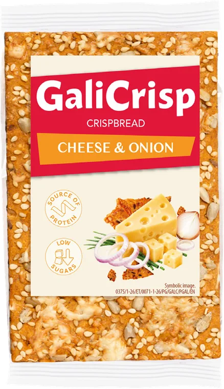
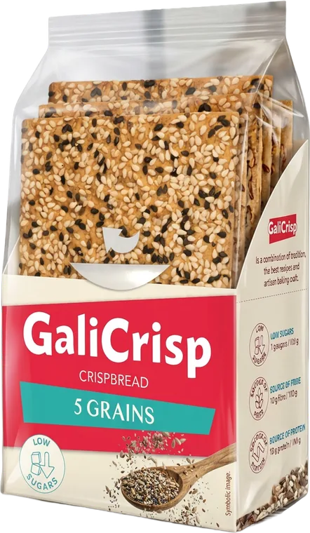
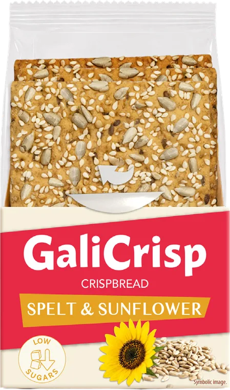
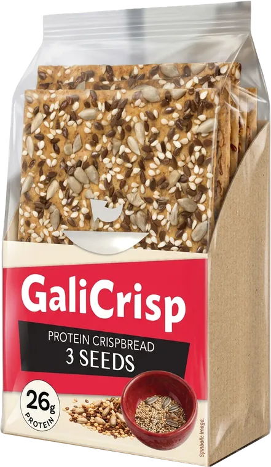
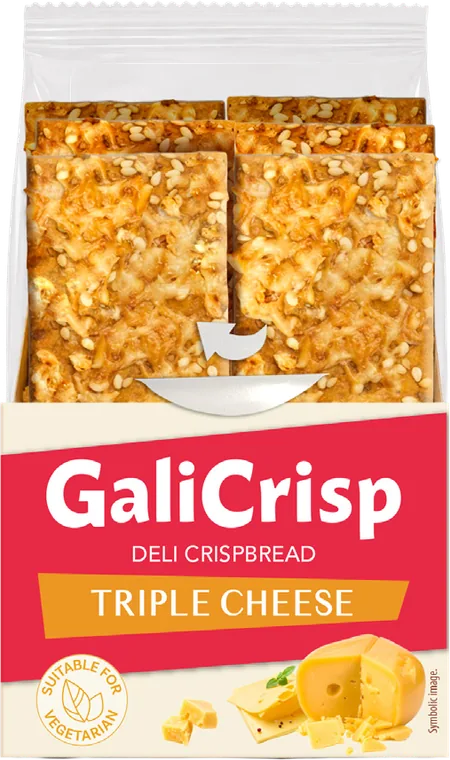

Pieczywo chrupkie: klasyczne, proteinowe, pełnoziarniste
Sześć linii pieczywa chrupkiego w opakowaniach od 130 do 200 g, od codziennej kromki z ziarnami po Protein z białkiem do 27 g w 100 g.
Pieczywo chrupkie to nasza największa kategoria i serce piekarni w Jeżowem. Każdą linię projektujemy pod konkretną półkę: Classic 135 g i 180 g dla codziennych zakupów, Artisan 130 g dla działu deli, Deli 180 g z wyrazistymi posypkami na deskę serów, Wholegrain 200 g w przezroczystym worku, który pokazuje ziarno, oraz Protein 180 g dla rosnącej kategorii high protein.
Wszystkie linie są dostępne pod marką GaliCrisp oraz jako private label. Smak, gramaturę, liczbę kromek i opakowanie dopasowujemy do sieci i rynku. Dane logistyczne każdej linii znajdziesz pod produktami, a pełną specyfikację wyślemy z ofertą.
Pieczywo chrupkie 135 g
Sześć solidnych kromek z ziarnami, zbożami albo prawdziwym serem, wypiekanych na równą, czystą chrupkość. 6 kromek

Ser i cebula

Ser i pomidor

Ser i dynia

Orkisz i słonecznik
Dane logistyczne
| Typ kartonu | Wymiary kartonu (S × W × D) | Szt. w kartonie | Kartony na warstwie | Warstwy na palecie | Kartony na palecie | Szt. na palecie | Wysokość palety | Termin przydatności |
|---|---|---|---|---|---|---|---|---|
| ekspozycja dwustronna | 196 × 167 × 292 mm | 10 | 16 | 10 | 160 | 1600 | 1,85 m | 360 dni |
Pieczywo chrupkie 180 g
Codzienne pieczywo chrupkie w większym, stojącym opakowaniu. Osiem kromek dla domów, w których pieczywo chrupkie jest na stole każdego dnia. 8 kromek

3 ziarna

Ser i dynia

5 zbóż

Orkisz i słonecznik
Dane logistyczne
| Typ kartonu | Wymiary kartonu (S × W × D) | Szt. w kartonie | Kartony na warstwie | Warstwy na palecie | Kartony na palecie | Szt. na palecie | Wysokość palety | Termin przydatności |
|---|---|---|---|---|---|---|---|---|
| ekspozycja dwustronna | 196 × 167 × 292 mm | 8 | 16 | 10 | 160 | 1280 | 1,85 m | 360 dni |
Pieczywo chrupkie Protein 180 g
Do 27 g białka w 100 g przy tej samej chrupkości co klasyczne pieczywo chrupkie. Stworzone dla szybko rosnącej półki high protein. Opakowanie z etykietą wielokrotnego zamykania. 8 kromek

3 ziarna

Cebula
Dane logistyczne
| Typ kartonu | Wymiary kartonu (S × W × D) | Szt. w kartonie | Kartony na warstwie | Warstwy na palecie | Kartony na palecie | Szt. na palecie | Wysokość palety | Termin przydatności |
|---|---|---|---|---|---|---|---|---|
| ekspozycja dwustronna | 196 × 167 × 292 mm | 8 | 16 | 10 | 160 | 1280 | 1,85 m | 360 dni |
Pieczywo chrupkie Artisan 130 g
Cieńsze, bardziej rustykalne kromki z obfitą posypką z ziaren i sera. Nasze premium pieczywo chrupkie na półkę deli. 7 kromek

Superziarna

Dynia i ser
Dane logistyczne
| Typ kartonu | Wymiary kartonu (S × W × D) | Szt. w kartonie | Kartony na warstwie | Warstwy na palecie | Kartony na palecie | Szt. na palecie | Wysokość palety | Termin przydatności |
|---|---|---|---|---|---|---|---|---|
| ekspozycja dwustronna | 290 × 170 × 160 mm | 10 | 19 | 10 | 190 | 1900 | 1,74 m | 360 dni |
Pieczywo chrupkie Deli 180 g
Wyraziste, wytrawne posypki: karmelizowana cebula i trzy sery. Tak samo dobre na deskę serów, jak na śniadanie.

Karmelizowana cebula

Ser i pomidor

Potrójny ser
Dane logistyczne
| Typ kartonu | Wymiary kartonu (S × W × D) | Szt. w kartonie | Kartony na warstwie | Warstwy na palecie | Kartony na palecie | Szt. na palecie | Wysokość palety | Termin przydatności |
|---|---|---|---|---|---|---|---|---|
| ekspozycja dwustronna | 196 × 167 × 292 mm | 8 | 16 | 10 | 160 | 1280 | 1,85 m | 210 dni |
Pieczywo chrupkie pełnoziarniste 200 g
Treściwa kromka pełna ziaren, w przezroczystym worku, w którym produkt sprzedaje się sam. 100% mąki pełnoziarnistej.

3 ziarna

Ser i dynia
Dane logistyczne
| Typ kartonu | Wymiary kartonu (S × W × D) | Szt. w kartonie | Kartony na warstwie | Warstwy na palecie | Kartony na palecie | Szt. na palecie | Wysokość palety | Termin przydatności |
|---|---|---|---|---|---|---|---|---|
| ekspozycja dwustronna | 196 × 204 × 292 mm | 8 | 16 | 8 | 128 | 1024 | 1,85 m | 360 dni |
Najczęstsze pytania
Ile białka ma pieczywo chrupkie Protein?
Pieczywo chrupkie Protein 180 g zawiera do 27 g białka w 100 g (wariant Onion 27 g, wariant 3 Seeds 26 g). Opakowanie ma etykietę wielokrotnego zamykania.
Jaki jest termin przydatności pieczywa chrupkiego?
Linie Classic, Protein, Artisan i Wholegrain mają 360 dni, linia Deli 210 dni.
Czy pieczywo chrupkie można zamówić pod marką sieci?
Tak. Każda linia jest dostępna jako private label. Zmieniamy smak, gramaturę, liczbę kromek i opakowanie zgodnie z wymaganiami sieci.
Pozostałe kategorie


Chcesz sprawdzić ten produkt na swojej półce?
Wyślij zapytanie. Odpowiemy z ofertą, specyfikacją i terminem wysyłki próbek.